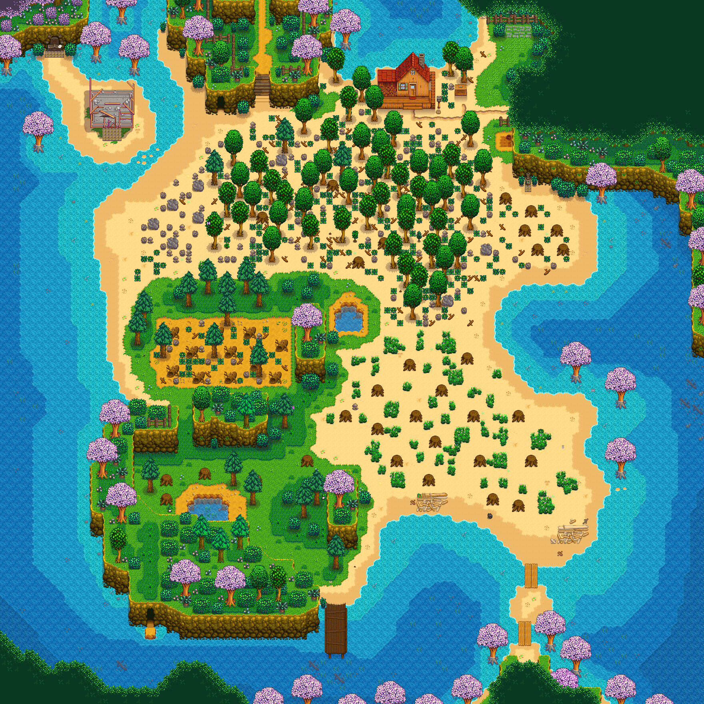
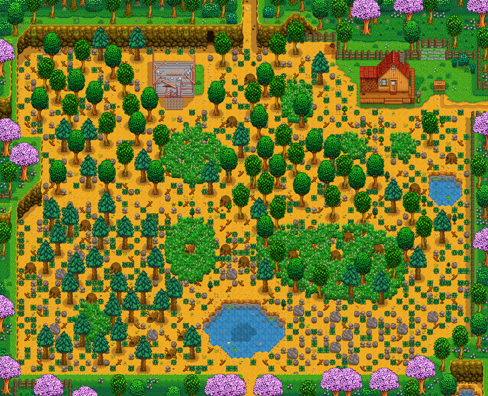
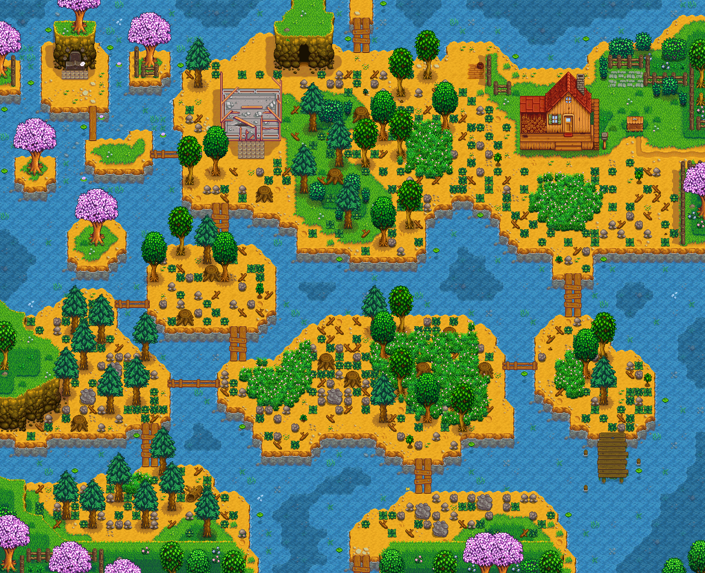
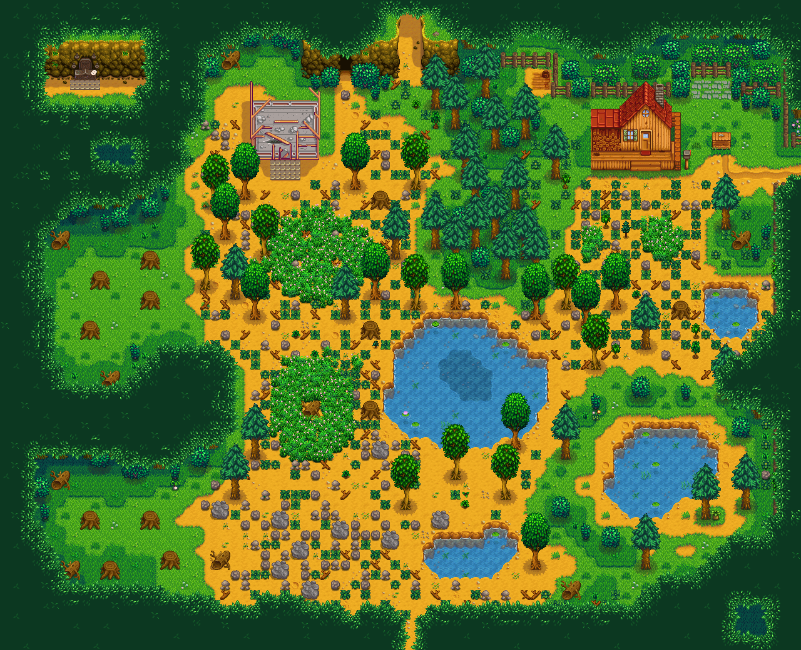
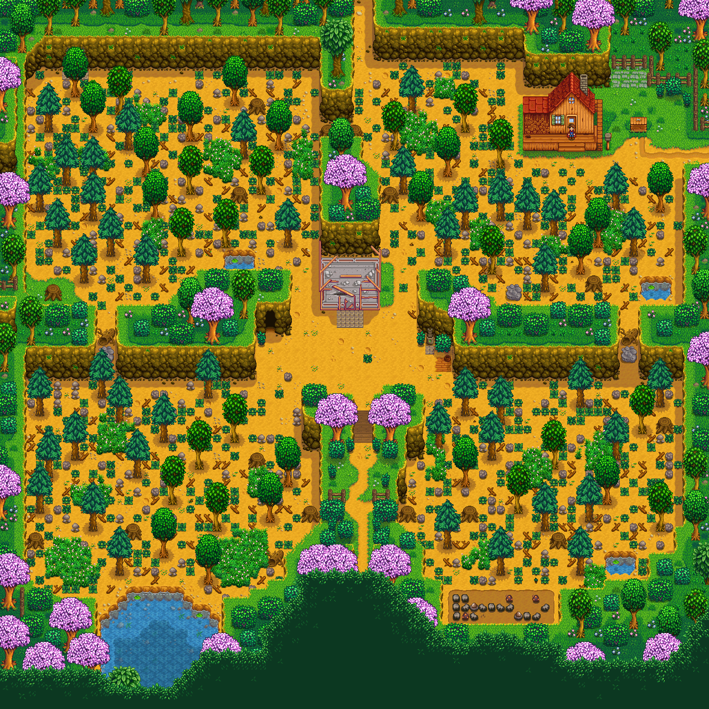
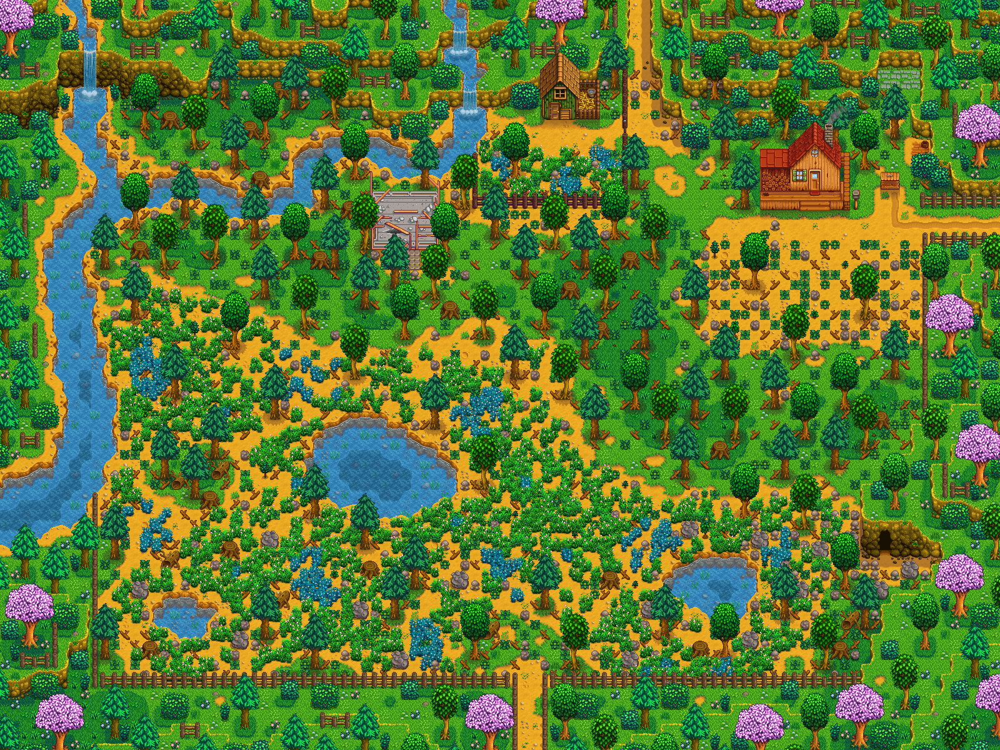

A sandy farm with lots of water, great for fishing but hard for farming.
Pelican Town

A classic farm layout with ample space for crops and animals.
Pelican Town

A farm with lots of water, great for fishing lovers.
Pelican Town

A lush farm with foraging opportunities and renewable stumps.
Pelican Town

A farm designed for multiplayer with distinct quadrants.
Pelican Town

A farm featuring a vast grassy landscape with plenty of space.
Pelican Town